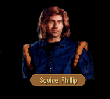

|
|
|  |
[CHAPTER 1]
[CHAPTER 2]
[CHAPTER 3/6]
[CHAPTER 7] |
|
|
| CHAPTER 1 - FIRST | CHAPTER 1 - SECOND |
|
Someone was calling. Recognizing the lilt of the young voice, Owyn turned and looked back down the road. A young squire that he had met at a party in Yabon was trudging behind them, a pack full of scrolls slung over his shoulder. The squire waved congenially and Owyn echoed the motion. "What do you think you're doing?! We are trying to remain unnoticed! Damn," Locklear muttered under his breath. "Try to behave as normally as possible. Since you know him, you handle him, Owyn. And remember Gorath's name is..." "Thorgath," Owyn finished, irritated. "I'm not a child you know." Locklear whispered. "That remains to be seen." OWYN: I didn't expect to see you again quite so soon. I would have thought you all the way to LaMut by now. PHILLIP: Would have been if the Duchess hadn't insisted in introducing me to all of her daughters. Amelia was the prettiest I believe, though I think Katherine took quite a liking to you. OWYN: Katherine took a liking to everyone at the party. She's as fickle as her mother. She'll likely marry a conDoin if she can find one not tied in the marital knot. PHILLIP: True enough. Say, I thought you said you were from Tiburn. Why are you taking this route home? Kind of a long way around isn't it? OWYN: Well yes, but I had to meet up with my...uncle Locklear here. And my other friend here is an elf, Thorgath. They decided that it would be nice for me to take a tour with them down to Kro..." LOCKLEAR: Hawk's Hollow. OWYN: ...down to Hawk's Hollow. I hear it's lovely at this time of year. What are you up to? PHILLIP: I'm looking to cash in a reward actually. When I was on my way up to Yabon last month, I found a chest in this area but I couldn't pick the lock on the thing. I figured it wasn't meant to be and I left off. Thing is, all through the Duchess' party I couldn't help but think about it. I had chest on the brain. I don't really care what's in it, but I have to pick that lock. |
Owyn raised a finger to his lips. Sensing that someone or something was nearby, he used the agreed upon sign that caution was called for. They steeled themselves for combat, their nerves wound tight like springs... Abruptly, a figure emerged into the open before them. OWYN: Squire Phillip! PHILLIP: Owyn?... What a...uh, surprise. |
| NEAREST TOWNS |
OWYN: I'm afraid my senses of direction and distance are a bit off right now. We all had a bit to drink last night and we're still trying to shake off the effects. Which way is the nearest place we could get cleaned up?SQUIRE PHILLIP: It must have been quite a bender if you're that confused! Head straight south along the main road and that will take you on into LaMut. If you're looking for good food, the Blue Wheel is a solid wager, though I warn you their Tsurani food can be a bit spicy.
| EMPTY HOUSES |
OWYN: Was anything left behind in any of the abandoned houses you saw?SQUIRE PHILLIP: Nothing of real value. Bits of food in a few cupboards, an occasional gold piece kicked beneath the foundation of the house. Lost items mainly. The majority of the places I visited had those unpickable locks -- what are they called -- Webber locks, yes. They had the Webber locks installed and so I wasn't able to get inside.
| LOST ITEMS |
OWYN: I'm not certain, but I think I may have mislaid a very valuable belonging of mine.SQUIRE PHILLIP: I shouldn't worry about it. Depending on where you lost it, the chances are good it will still be there.
| HANDS (if Hawk's Hollow) |
OWYN: This is going to sound lunatic, but would you mind letting me see your hands?SQUIRE PHILLIP: My hands? Okay...Why?
OWYN: Just humor me. A man we spoke to in Hawk's Hollow said that we should look for a man who had a sign on his hands. He said that the man had very important scrolls in his pack and that we should listen to him... Your hands look fine to me.
SQUIRE PHILLIP: Scrolls? It sounds like the man you spoke to might have gone round the bend.
| GRAIN (if Dala) |
OWYN: I don't suppose you would know where we could pick up a bag of raw grain?SQUIRE PHILLIP: Why on earth would you want any? You can't eat it, you know, or at least not without doing disgusting things to it. Please don't tell me you're developing a taste for pottage.
OWYN: No, nothing so horrible as that. The priests of Dala have had more of the deserving poor this season than they can handle and need grain for the miller. We thought we would lend a hand.
SQUIRE PHILLIP: Sounds worthy to me. You might try Hailey Betencourt who lives south of Highcastle Cross. I've done business with him on father's behalf before. He might be willing to work an exchange.
| CHAPTER 2 - FIRST | CHAPTER 2 - SECOND |
|
The crevasse was occupied. Standing away from a clutch of bushes, Squire Phillip impaled them with an flush faced glare while he refastened the cinches of his pants. Deciding that his dignity was not irretrievably beyond repair, he politely tucked in the tail of his shirt while he addressed Owyn. PHILLIP: Not that I'm displeased to see you, Owyn, but you picked an odd moment to show up. OWYN: Sorry about that. I didn't recognize you from behind and when we saw you duck into this cubhole here we became suspicious. We've had a few problems with bandits on the roads. PHILLIP: I've narrowly avoided some myself. Fortunately they didn't pay much attention to me. I don't think father would have been too pleased if I'd ended up ransomed. OWYN: Did you ever find that chest you were looking for? PHILLIP: A bit of a disappointment. Soon as I had the lid up, I found it was empty. I should have expected that someone else would get there before me. Likely our bandit friends plundered it. |
They were not alone. Owyn's pulse quickened as he saw the lone figure approach; but when it became apparent they were not being attacked, he relaxed a bit, squinted slightly in an attempt to see who was about to join them. PHILLIP: Hello again. What's on your mind? |
| HIGHCASTLE |
OWYN: Should uncle and I head on to the east, we might stop by Highcastle for a while and see the sights.SQUIRE PHILLIP: Not much to look at. It's a typical border town and the only thing of interest there is the castle itself. I understand that Prince Arutha paid for some of the newer fortifications there after the Riftwar, but all in all I wasn't much impressed with it. However, I have to admit they had a nice armory there. They keep some of the prettiest swords I've ever seen in stock.
| CHAPTER 3/6 - FIRST | CHAPTER 3/6 - SECOND |
|
They were not alone. Owyn's pulse quickened as he saw the lone figure approach; but when it became apparent they were not being attacked, he relaxed a bit, squinted slightly in an attempt to see who was about to join them. PHILLIP: Are you sure you aren't following me around, Owyn? We seem to be bumping into one another fairly frequently. OWYN: If seeing each other more than once a year can be called frequently. I guess that wedding party in Yabon turned the both of us into nomads. PHILLIP: I've about had my fill of it. If travel broadens the mind then I dare say my skull should be the size of a haywain by now. I'll be glad to get back home again and lay in my own bed for a time. OWYN: Why are you in the eastern part of the Kingdom? I thought you lived in LaMut. PHILLIP: On occasion, when my father will allow it, I sleep in LaMut, but I seem to spend most of my time running the Kingdom roads on family business. By my estimation, he must have his fingers in more pies than there are bakers in all of Midkemia! A trader has many things to keep track of and only so many sons to help him... OWYN: Why doesn't he just hire a runner to do it for him? PHILLIP: It's been suggested, most emphatically by those of us unfortunate enough to have been born to him, but he likes to quote a Quegian saying about marriage: Why pay for what you can get for free? Not to paint a poor picture of him though - he's just very practical about his money. |
[ZONE 7] They were not alone. Owyn's pulse quickened as he saw the lone figure approach; but when it became apparent they were not being attacked, he relaxed a bit, squinted slightly in an attempt to see who was about to join them. PHILLIP: Care to take me up on a foot race, Owyn? I'd beat you in the quarter mile with the legs I've developed! |
| NOTHING TO ASK |
OWYN: Actually, I...well...no. When I first saw you, it occurred to me to ask you something, but whatever it was has utterly slipped my mind at the moment. Will it bother you if I come and ask you about it later? We have a few things we need to be attending to elsewhere.SQUIRE PHILLIP: Go on then. I have a few things to do myself...
OWYN: You are most gracious. Thanks and farewell.
| THE FIFE (if Fife) |
OWYN: Have you ever stopped in at a tavern called the Fife and Laurel? It's a little north of here if I haven't lost my bearings. They serve a wonderful meat pie.SQUIRE PHILLIP: The Fife? I've made a point of visiting it, and on many occasions. If it hadn't of been for a pint of old man Kelly's lager, I'm sure I would have died of thirst on several occasions. It's too bad they had to close up when the old man passed away.
OWYN: They weren't closed when we went by. Matter of fact, the old man who operated the place seemed very healthy to me. Sure we're talking about the same place?
SQUIRE PHILLIP: The Fife's the only tavern in all of the Dimwood. There is something very odd about all of this. Old man Kelly died nearly a year ago and he didn't have any relatives to take it over after his death.
OWYN: You sound as if the man were in your family. You must have stopped often.
SQUIRE PHILLIP: The Dimwood is on my route, in a manner of speaking. I make it a point to find friendly faces while I'm travelling.
| DIMWOOD (if Fife) |
OWYN: I'm fairly new to the Dimwood, so anything you know about it...SQUIRE PHILLIP: Not much to tell, at least not about the Dimwood. It isn't very dim and as far as a wood goes, well... I think it's a bit of a stretch to call it a forest, but I guess it keep sthe locals happy to think of it that way. It's big. There aren't many that will live there except for the scorpions and a few free franklins trying to get something to grow here. Merchants shy away from the place. To my knowledge, The Fife was...is the only business operating inside the Dimwood.
| CRAIG (if Craig) |
JAMES: Do you know anything about a man named Craig?SQUIRE PHILLIP: He lives to the south...that is, if I remember correctly, someone answering to that name lives near Sethanon.
JAMES: Perhaps you can clear something up for us then. When we ran into him, he was claiming to be twenty three years old but it was abundantly obvious to us he couldn't have been anything less than seventy or eighty. He claims something happened to him while he was on a trapping trip into the southeastern corner of the Dimwood and he began aging suddenly. Of course it sounds like utter madness, but we were wondering if you knew what had driven him mad.
SQUIRE PHILLIP: The only Craig I know is twenty-three Midsummers and to my knowledge his father isn't named Craig. Did he appear to be healthy?
JAMES: For an eighty year old man, as strong as a horse.
SQUIRE PHILLIP: I don't know what is at the bottom of all this, but a bit of advice. I would stay away from the part of the Dimwood he was in until one of us can discover what is going on.
| CHAPTER 7 - FIRST | CHAPTER 7 - SECOND |
|
A boy hurried from the house. Dressed in a squire's colors, he made haste as he closed the distance between them, his expression revealing he was more than a little happy to see them. Huffing out heavy breaths, he waved to them. PHILLIP: Please, do not leave us yet. Seigneurs, in ordinary circumstances I wouldn't be empowered to ask for your aid, but our forces are spread rather thin at the moment. We need every body we can get to aid in this effort, whether you've sworn an oath to the secret garrison at Sethanon or not. JAMES: Sethanon Garrison? I've never heard Arutha mention anything about troops being stationed near Sethanon and you're far too young for senior duty. PHILLIP: How old do you think I am? JAMES: Eighteen, maybe nineteen summers. About the same age as a squire we know from Tiburn. PHILLIP: While Count Beleforte's son Owyn was taking his first baby steps, my wife and I had already had a son for three years. I'm thirty seven summers old and hold the rank of Captain in the Kingdom Army. When my commander noticed how young I looked, even as a veteran officer, he struck on the idea that I would make an ideal courier for the secret garrison. LOCKLEAR: Sink me! A spy for the Kingdom! JAMES: Even if the things you say about yourself are true the rest of your story's impossible. Arutha would have told me about a secret garrison. PHILLIP: Has he ever explained to you why there is an absolute ban on visitation to Sethanon? Can you recall any other occasion in which Prince Arutha or King Lyam have forbidden people to visit battle sites? JAMES: No, but I always assumed he wished to keep it as a memorial to the battle there. PHILLIP: A memorial that cannot be visited by its veterans? You're trying to rationalize, Seigneur. Not even the members of the garrison are allowed near Sethanon unless an armed force approaches. Their orders are to destroy any who come against it. And now I must find a way to get word to them that the moredhel are advancing. Do you have any ideas on the subject? |
[CHAPTER 7] Phillip hailed them. A worried expression on his face, he moved out of the converted supply house to greet them. PHILLIP: I think that the moredhel may have picked up on my observations. I saw a band of them scouting near here, but they didn't approach the house for some strange reason. That doesn't mean they won't come back, however. What did you need? |
| SUPPLIES |
JAMES: I don't know how my friend Locklear here feels, but I would appreciate it if you could point us towards a decent meal. We've had trouble finding anything to eat.SQUIRE PHILLIP: Not surprising. We've had evidence the moredhel were spying on Sethanon for several months now and it's logical to assume they've been stripping the local resources to pave the way for this attack. They pulled the same trick the last time they headed to Sethanon. We anticipated something was up and took the liberty of making some of our own provisions. Wilindi has graciously lent us the use of her house for a while to store goods. Take what you need, but please no more. We are far short of necessities. If you keep an eye out for old tree trunks, you'll find some of the rations we've stored against this possibility, though I would be careful if I were you. Some of them have likely gone bad by now.
| WAANI (if Spynote) |
JAMES: We found your note in the moredhel chest. Do you still have the Waani that was in it?SQUIRE PHILLIP: If you mean the magical device, yes, though neither I nor Wilindi have been able to find out what it's used for. We were hoping it could be used against the moredhel somehow.
PATRUS: Pah! No toad-stickin' witch could figgur how! It's Tsurani and probably one o' those infernal Greater Path ob-e-jects. Pompous little buggers made up a whole new magic just to make my liver itch!
SQUIRE PHILLIP: Though she might have said it differently, I believe Wilindi would agree. She's still studying it intensely. I'll fetch it before you leave.
| FIRST GOODBYE | SECOND GOODBYE |
|
JAMES:
We need to get back to our mission. Will you be able to hold things together here? PHILLIP: Unless another band of goblins come round, I should be all right. I need to stay here and keep an eye on the supplies, but you'll be welcome if you need to come back. JAMES: That's appreciated. Farewell, squire. |
JAMES:
There's still some bastardly machine out there and I don't think Delekhan will destroy it
himself, so I suppose we should get back at it. PHILLIP: Good luck to you, then. I don't envy you walking straight into their stronghold. JAMES: I can't say I'm too enthused about it myself, but you do what needs to be done. Until we meet again, Phillip. |